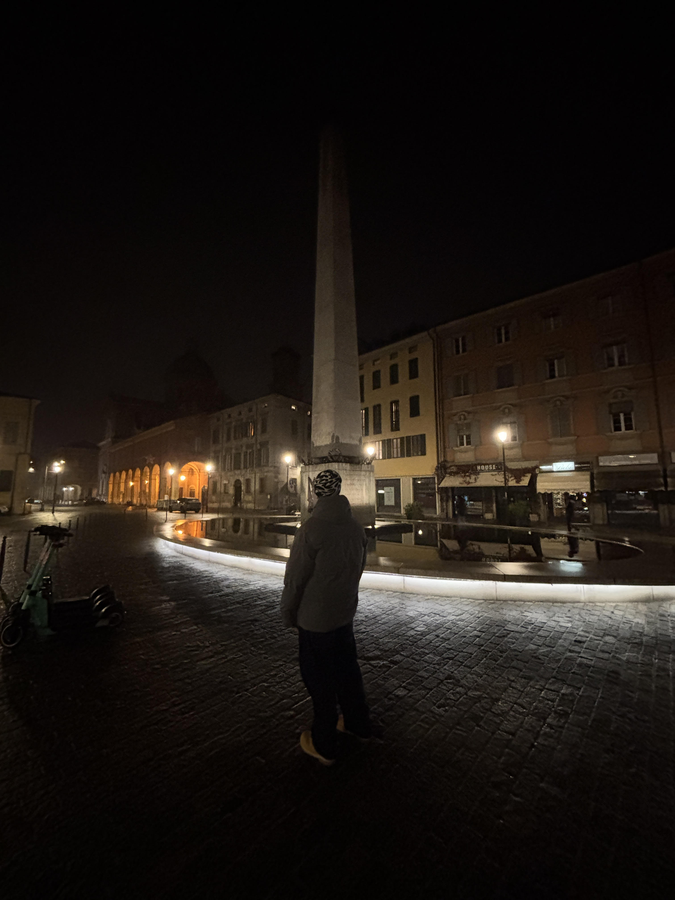

Zawsze byłem osobą, która lubi działać i nie boi się nowych wyzwań. Moje dotychczasowe doświadczenie jest bardzo zróżnicowane – od naprawy i precyzyjnej konfiguracji sprzętu komputerowego podczas zagranicznych praktyk, przez pracę pod presją czasu w gastronomii.
Bardzo cenię sobie współpracę z ludźmi, co udowadniają moje lata poświęcone na wolontariat. Działania na eventach sportowych nauczyły mnie, jak ważna jest dobra organizacja, logistyka i szybkie reagowanie na nieoczekiwane sytuacje.
Podczas zagranicznych praktyk zawodowych we Włoszech zdobywałem twarde doświadczenie w pracy serwisowej, diagnozowaniu usterek i naprawie sprzętu komputerowego.
Zdobyłem cenne doświadczenie zawodowe pracując w dynamicznym środowisku gastronomicznym. Odpowiadałem za kompleksową obsługę klientów i przygotowywanie dań zgodnie ze standardami.
Od IX 2022 do VI 2023 angażowałem się w pomoc przy organizacji wielkich eventów sportowych i charytatywnych. Taka działalność nauczyła mnie pracy z ludźmi i logistyki imprez masowych.
Obsługa i bezpośrednia pomoc organizacyjna przy ogólnopolskich biegach CITY TRAIL w Poznaniu, wymagającym biegu ULTRATUR w Trzaskowie oraz Murowanej Dyszce.
Pomoc przy organizacji i logistyce amatorskich turniejów koszykówki z ramienia UKS GO BASKET.
Współpraca i wsparcie akcji społecznych organizowanych przez lokalną Fundację Bread of Life.